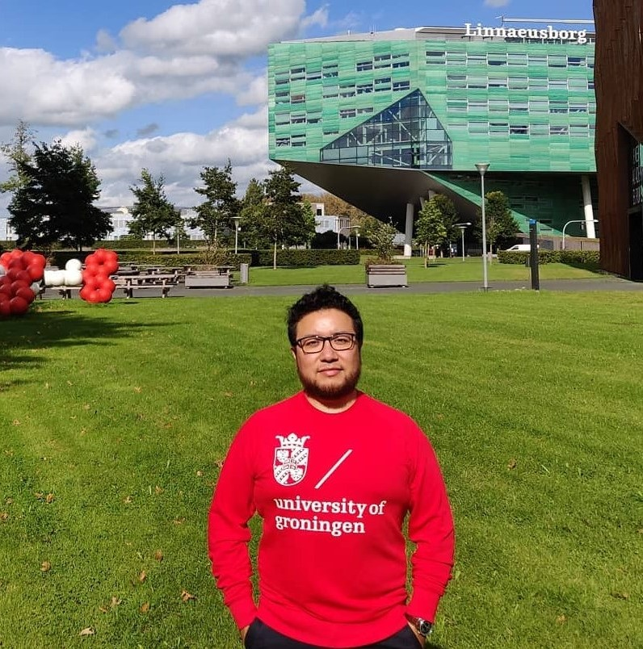

|
 |
Bio Sketch
Rodolfo Reyes-Báez received a B.Sc. in Mechatronics from the Meritorious Autonomous University of Puebla (BUAP), Mexico, in 2011, an M.Sc. in Electrical Engineering (Mechatronics) from the Center for Research and Advanced Studies (CINVESTAV) in 2014, Mexico, and a Ph.D. in Systems and Control under the supervision of Arjan van der Schaft and Bayu Jayawardhana from the University of Groningen, Netherlands in 2019. He received the Roberto Rocca fellowship Doctorate Awardee in 2018. From Jan. 2019 to July 2020, he was a control engineer with TNO Wind Energy, The Netherlands. From Jul 2020 until Feb 2023, he was a researcher and lecturer at the University of Groningen. Currently, he is an R&D Mechatronics Engineer with ASML Holding N.V. His current research interests include nonlinear systems and control, Lagrangian and port-Hamiltonian methods in modeling and control of physical systems and networks, control of robotic and high-precision mechatronic systems.
|